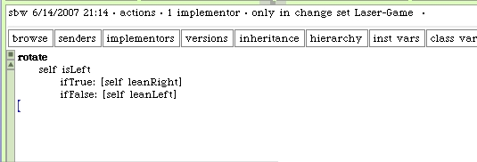
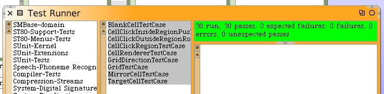

We're going to improve the rotate code for our mirror cells and then both the failed unit tests should start working again. Here's the fixed #rotate method. The #leanLeft and #leanRight code already do the right thing. We just need to use them.
Just as we expected, when we run the unit tests after applying this code change, everything passes.
This is another good breaking point where you can save your image. Our next steps will be to detect and act on mouse-up events.